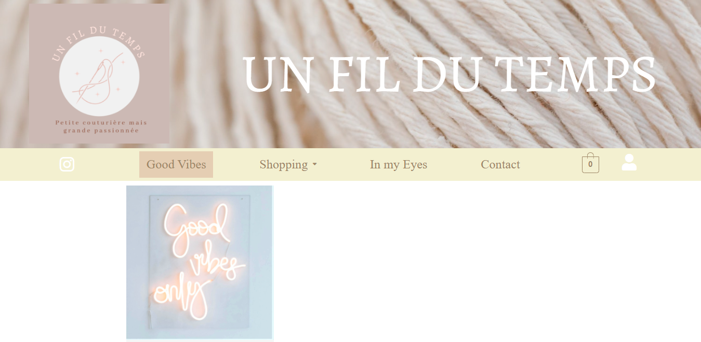

Information
Categorie: Site Web
Technologie utilisé: WORDPRESS ELEMENTOR WOOCOMMERCE
Introduction
Unfildutemps est un site web e-commerce de création couture zéro déchet, bébé , mode ... crochet et broderie sur toile réaliser avec le CMS Wordpress avec les extensions ELEMENTOR pour la mise en page et WOOCOMMERCE pour la partie boutique